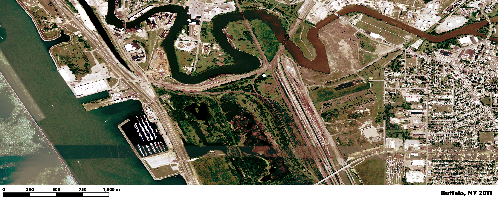
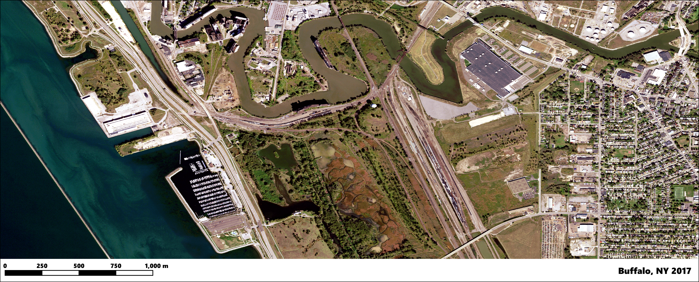
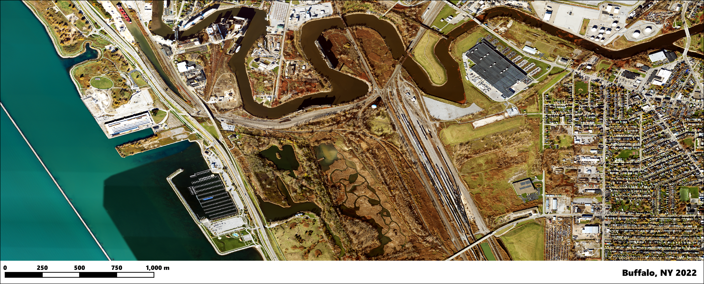

This area shows the Riverbend section of Buffalo, NY before the construction of the Tesla Gigafactory New York. Previously, the land was used a steel mill, owned by Republic Steel, that operated along the Buffalo River on a 86-acre plot of land.

In 2014, the construction of the started and was completed in 2017. The image above shows the changes in landscape from 2011 to 2017.

This is the landscape of Gigafactory New York, or Giga New York, as of 2022. The facility is a large producer of the Tesla Solar Roof and Tesla Superchargers.